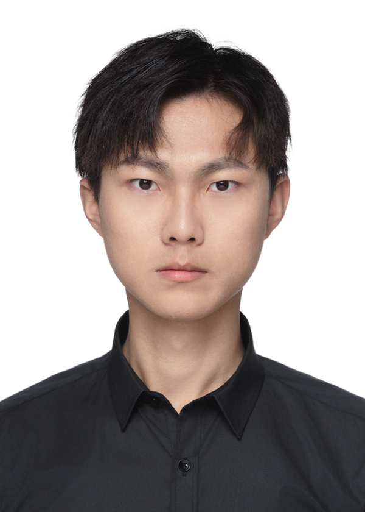

Personal coordinates
Research is how I learn to see structure.
M.Eng. student at UCAS · 3D vision
I am an M.Eng. student at the University of Chinese Academy of Sciences.
01
Current direction
My current work focuses on sparse-view 3D Gaussian Splatting.
02
Trajectory
03
Academic service
Connect
For research discussions or potential collaboration, email is the most direct channel.
zeyangbai.rvo@gmail.comgithub.com/Rvosuke